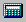

 Click the Report Cost Calculations button to show how the cost of your current design is calculated. The Cost Calculations Report is shown as a table in a separate window. The report can be printed or copied to the Windows clipboard.
The Report Cost Calculations button is located on the Status Toolbar. It can also be accessed from the Report menu.
Use the Print button (on the right-hand side of the Cost Calculations Report window) to send a copy of the report to the
Use the Copy button (on the right-hand side of the Cost Calculations Report window) to copy the report to the Windows clipboard. The data will be in tab-delimited ASCII text format. The data can be pasted directly into a Microsoft Excel spreadsheet or a Microsoft Word document. In Word, some adjustment of your tab settings may be necessary to get the numbers to display correctly.